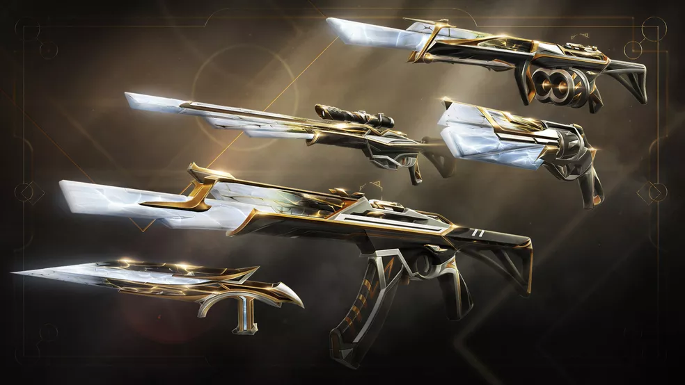
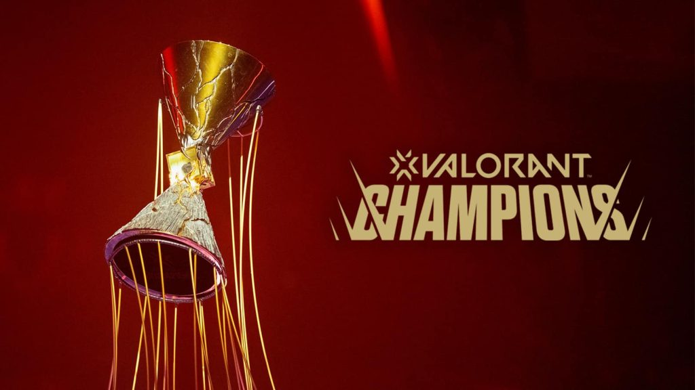
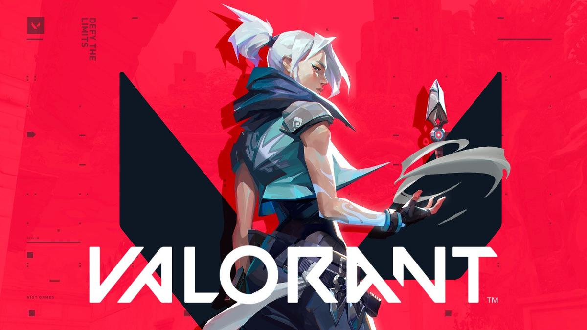

PORQUÊ JOGAR?
Valorant é um jogo FPS de estratégia em equipe, nele você consegue desenvolver boa comunicação e
trabalho em equipe além de também melhorar suas habilidades de mira e entre outros, apesar de ser mais um jogo
com temática jogador x jogador armados, assim como outros já existentes como CS, COD e etc, nos quais você
pode jogar sozinho da forma que preferir sendo independente de time, no Valorant você até pode seguir essa
metodologia de jogo, porém ficará mais difícil de conseguir vencer uma partida, pois o segredo de uma boa
jogatina é COWORKING. Valorant também é um jogo que requer pouco das máquinas de seus usuários, sendo assim um
aplicativo leve e saudável para muitos computadores e ainda é gratuito. Junte-se a comunidade e divirta-se com
seu time!

ARMAS E ESTILOS
No Valorant existem muitos tipos de armas, aprimore e desenvolva
suas habilidades, domine o leque de armamentos do jogo e destaque-se.
Neste quem possui skins não são os personagens, mas sim as armas
compre a que mais gostou e use como quiser.
AGENTES E CLASSES DE JOGABILIDADE
No Valorant temos os Agentes que são os pesonagens jogavéis cada um
tem suas próprias habilidades que fazem a diferença nas partidas além
também de sua classe, seguindo um preparo e trabalhando em equipe, ficará
mais fácil garantir a vitória, analise e conheça os personagens e suas
classes e desenvolva o seu próprio estilo de jogo.

COMUNIDADE, VÍDEOS DE HISTÓRIA E CENÁRIO COMPETITIVO
A Comunidade Valorant é rica em história e competição, frequentemente a
Riot Games complementa sua linha com novos vídeos e conteúdos no jogo para
movimentar a comunidade e atrair novos jogadores.
Além de promover grandes eventos anuais com premiações fantásticas como por
exemplo o Valorant Champions, que é o campeonato Mundial de Valorant!
Saiba mais sobre Valorant clicando aqui!
COMO ENCONTRAR E BAIXAR VALORANT?

É bem simples, basta clicar na imagem acima para ser redirecionado ao site oficial com segurança!